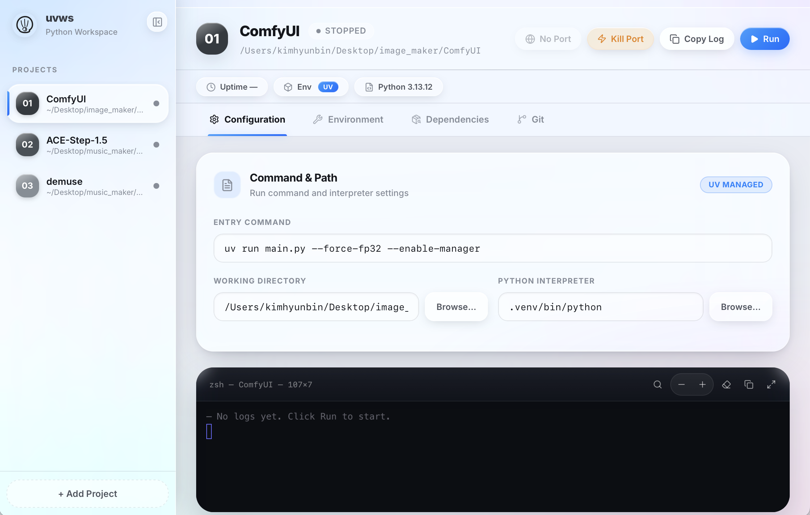

cd 하고 venv 켜고 python 돌리던 거, 이제 폴더 한 번 등록해두면 끝. 여러 프로젝트를 데스크탑 앱 하나에서 관리하고 실행하세요.
macOS (Apple Silicon · Intel) · Windows 10+ · 무료

로컬에서 파이썬 프로젝트 여러 개 돌리다 보면 쌓이는 그 귀찮음들, 하나씩 정리했어요.
폴더를 등록하면 그다음부턴 클릭 한 번. 내부적으로 uv run으로 감싸 venv 없이도 동작하고, 없으면 첫 실행 때 자동으로 만들어줍니다.
각 프로젝트의 stdout/stderr가 xterm.js 터미널로 실시간 스트리밍. 로그에 localhost 주소가 뜨면 브라우저 열기 버튼이 알아서 나타납니다.
포트를 잡고 있는 프로세스를 SIGKILL로 종료하고, 실제로 비워질 때까지 확인합니다. "포트가 이미 사용 중" 에러에 더는 lsof를 칠 필요가 없어요.
requirements.txt나 pyproject.toml이 있는 폴더를 가져올 때 Python 버전(3.10–3.13)을 고르고 의존성 설치까지 한 번에.
여러 프로젝트 서버를 동시에 띄우고 각각 독립된 터미널·포트로 관리. 앱을 끄면 돌던 서버가 함께 정리되고, 비정상 종료 시에도 다음 실행에서 청소합니다.
프로젝트가 Git 저장소면 브랜치·ahead/behind·변경 파일·최근 커밋을 한눈에 보고, Fetch / Pull / Push를 버튼으로 실행합니다.
버튼을 누르면 최신 버전이 바로 다운로드됩니다. 깃허브 페이지를 거치지 않아요.
curl -LsSf https://astral.sh/uv/install.sh | sh
Windows (PowerShell)
powershell -ExecutionPolicy ByPass -c "irm https://astral.sh/uv/install.ps1 | iex"
macOS 첫 실행 시 보안 경고가 뜨면 (공증 전이라)
xattr -cr /Applications/uvws.app